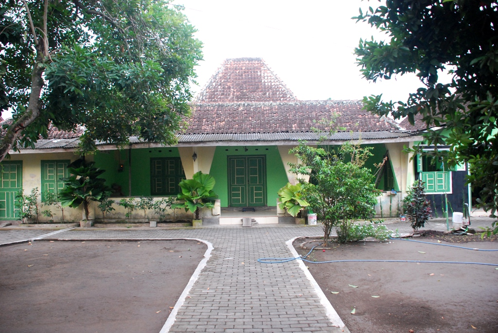

Rumah jengki merupan salah satu jenis rumah yang menarik untuk di ketahui, karena rumah ini sebenarnya adalah rumah modern pada tahun 60 -70 an. menariknya di desa jagalan adalah rumah jengki disini beda dari tempat lain, kebanyakkan rumah jengki ini adalah perpaduan antara rumah modern tahun 60 an dan rumah adat jawa yaitu joglo, limasan dll. dikarenakan pada tahun 60 an banyak rumah - rumah baru yang di bangun dengan model jengki, karena tertarik dengan model rumah jengki akhirnya banyak pemilik rumah joglo yang merenovasi rumahnya dengan model jengki, tetapi tidak merubah struktur bangunan pokok dari rumah joglo tersebut, hasilnya biasa anda saksikan langsung ketika anda berkunjung di Desa Jagalan